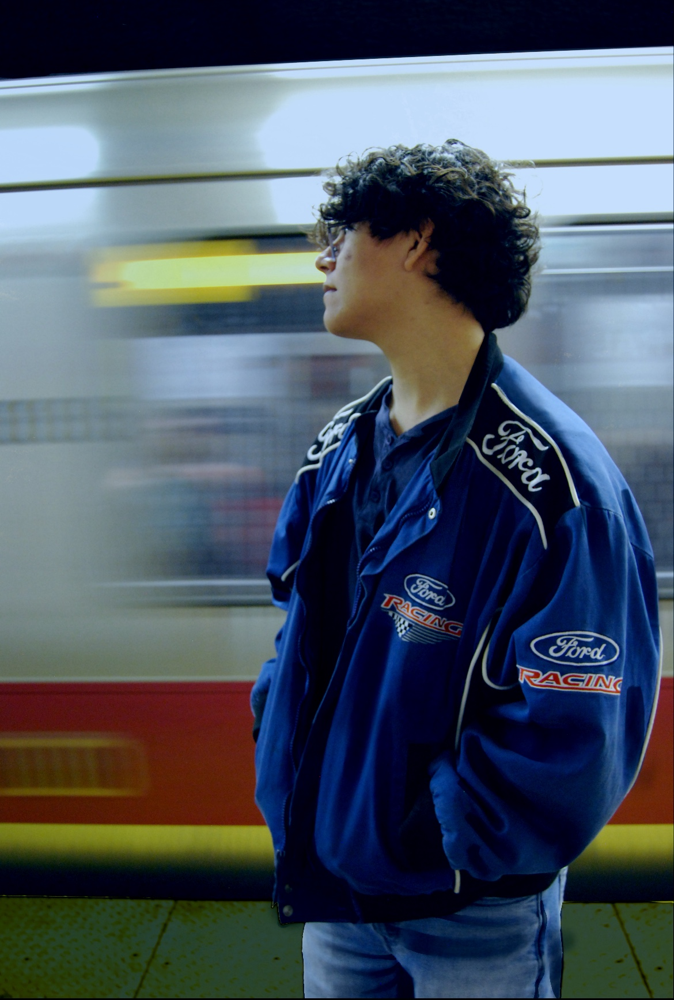

I am Sound Designer, Technical Audio Designer, and Composer who strives to finish a goal in a creative way. I am a current student in Berklee College of Music, dual majoring in Game and Interactive Media Scoring and Electronic Production and Design. I have a passion for video games, traveling around, and experiencing new things. I love going through life with a sense of humor and positivity. I have worked on art, film, game projects with other students while at Berklee. I am also a current leader in the Sound Design Network Club showing new students techniques, organizing events, introducing sound design opportunities, and interviewing industry professionals. As of now I am currently looking for new opportunities to collaborate and learn in the game industry.
